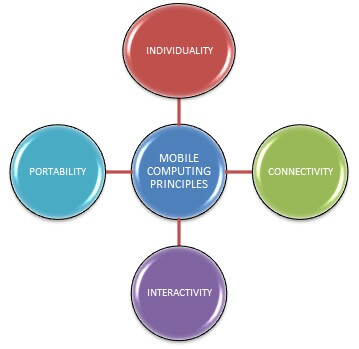

main principle
Links
main principle
- Portability: Devices/nodes connected within the mobile computing system should facilitate mobility. These devices may have limited device capabilities and limited power supply but should have a sufficient processing capability and physical portability to operate in a movable environment.
- Connectivity: This defines the quality of service (QoS) of the network connectivity. In a mobile computing system, the network availability is expected to be maintained at a high level with a minimal amount of lag/downtime without being affected by the mobility of the connected nodes.
- Interactivity: The nodes belonging to a mobile computing system are connected with one another to communicate and collaborate through active transactions of data.
- Individuality: A portable device or a mobile node connected to a mobile network often denote an individual; a mobile computing system should be able to adopt the technology to cater to the individual needs and also to obtain contextual information of each node.
